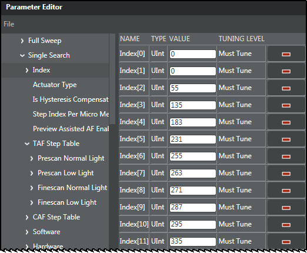
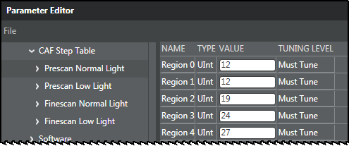
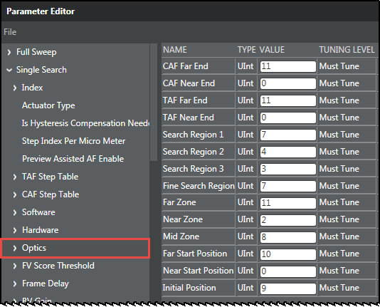

NOTE: There is no tool support to calculate the single search lens position values, CAF step table values, and TAF step table values based on the optical parameters and range of the actuator. Future releases of the tool will provide this support. Until then, the defaults for these parameters should provide stable AF performance.
Index

The index is a mapping of physical distance to lens positions where index [0] represents the near limit and moves progressively to index [n], which represents the infinity limit. The index determines the boundaries of the decision in the single AF algorithm. It is recommended to set the total movable logical lens position range as [0 - 399] to have the same logical lens position across multiple actuators and sensors.
TAF step table

The TAF step table contains the values for the touch autofocus search regions for various light conditions. The regions are used for obtaining step size.
CAF step table
The CAF step table contains the values for the contrast autofocus search regions for various light conditions. The regions are used for obtaining step size.
Optics

The Optics structure contains boundaries, regions, and start boundaries for CAF and TAF. Hover over each parameter to see a description of the parameter.